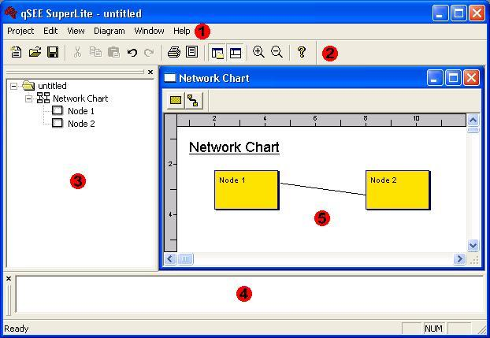

|
|
QSEE SuperLite - The Environment
This document provides help information related to the graphical
interface of the QSEE SuperLite environment. QSEE SuperLite is an
integrated modeling environment based on a multi-document style
graphical interface. Operations can be performed via a main menu,
using toolbar buttons or by using keyboard shortcuts.
To return to the main help page click the
back button below -
|
|
The Graphical User Interface
The graphical user interface of the environment is shown below. Use the
number tags provided to identify the purpose of each window. This example
shows the tool during operational model, i.e. when it being used for modeling.
During start-up the interface may appear slightly differently.
Although not shown in this example, there may be multiple occurrences of the
diagram window (5). These can be either different views of the same model
or different models entirely.

|
KEY
|
|
|
= The main menu bar provides a
standard set of operations for all QSEE Superlite tools. |
|
|
= The main tool bar provides shortcuts to some of
the standard operations found in all QSEE Superlite tools. |
|
|
= The navigator tree allows you to navigate a
project and displays all diagrams along with their nodes and links. |
|
|
= The message window displays messages when the
tools are in use, such as results of model checks. |
|
|
= The diagram editor is the part of the interface
where the building of models takes place. |
Many of the windows may be moved to suit user preferences. To move a
window click and hold down the left mouse button while dragging the window to
its new position. The windows that can be repositioned in this way
include the main tool bar, the navigator tree, the message window and the
diagram editor(s).
The Main Menu Bar
The main menu bar provides access to the operations that are common to all
QSEE SuperLite based tools. Since the environment is very generic in
nature (i.e. it can support a large number of tools) most operations that can
be performed are done so using context sensitive menus. These may be
shown by right clicking on the object of interest within either the diagram
editor or the navigator tool. The options described in this section are
available for use within all supported tools, i.e. they are not context
sensitive.
To expand a menu from the main menu bar simply left click on the menu name.
Select and option from the menu option by left clicking. A menu may be
dismissed without selecting an option by either pressing the Esc key or
clicking outside the menu area. The most common operations are also
duplicated on the main tool bar for convenience. These have an icon that
matches the option within the menu itself. Also certain operations have
keyboard shortcuts, e.g. Ctrl-S to save a project. When available
these are shown to the right of the option within the menu. Each menu has the
following purpose.
- Project Menu - allows manipulation of
projects (new, open, close, save etc.) and
printing activities.
- Edit Menu - provides undo, redo and cut, copy, paste type
operations.
- View menu - allows various application windows to be
hidden/re-displayed (e.g. the navigator tree)
- Diagram menu - allows configuration of how the current
diagram is viewed.
- Window menu - allows arrangement of the multi-document interface
windows.
- Help menu - provides access to help and on-line information about
QSEE SuperLite.

To return to the main help page click the button
below -